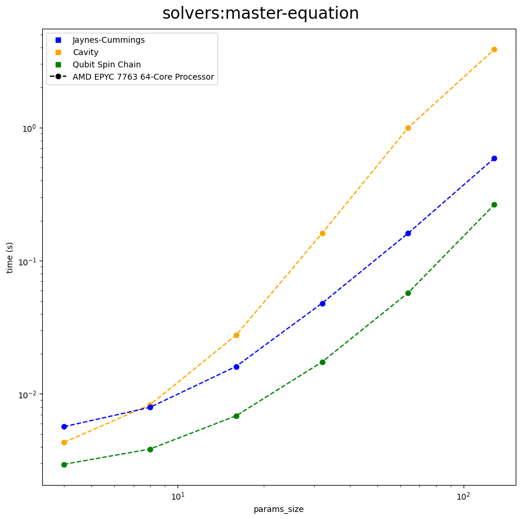
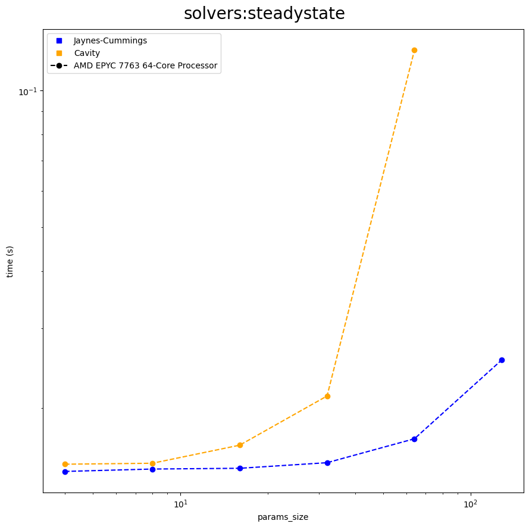

Get Started
Introduction
Try QuTiP!
QuTiP Virtual Lab
Features
Other QuTiP Packages
Quantum Information Processing
Quantum Optimal Control
Quantum Toolbox in Julia
Tutorials
All Tutorials
By Category
Visualizations
Time Evolutions
Quantum Information Processing
Optimal Control
Tomography
Permutational Invariant Lindblad Dynamics
Hierachical Equations of Motion
Lecture Series
Quantum Toolbox in Julia
Resources
User Guide
API
Wiki
Benchmarks
Changelog
Previous Versions
QuTiP 4.7.x
Migrate to QuTiP v5
All Versions
Community
GitHub
For Educators
For Researchers
Google Groups
Jobs
About
News
Devs
Citing
See on GitHub
Scaling Benchmarks: Solvers

